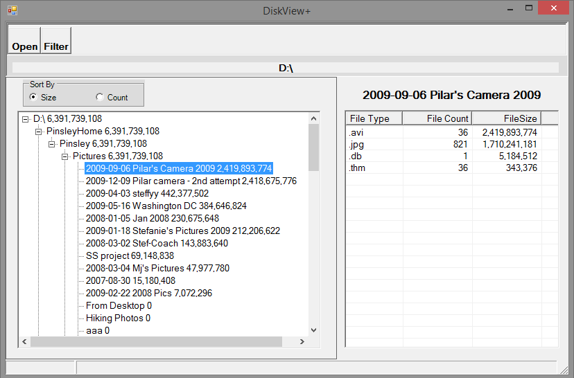
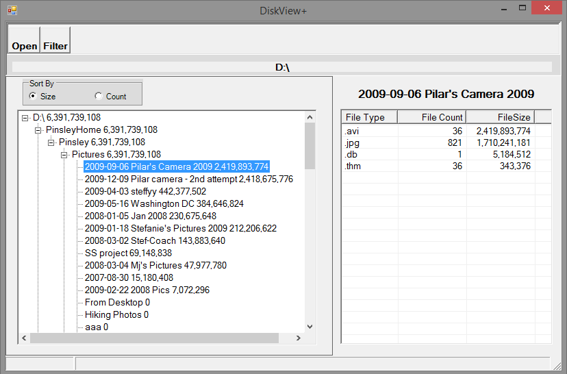

Over the years, I've often found myself wondering what's taking up disk space on a volume. Although I found a number of utilities available to scan a volume and report usage, none of them reported the information in a way that made me happy. So I wrote my own -- DiskViewPlus. It's not a pretty application -- it's a battleship-gray WinForms application -- but it has saved the day a number of times. The code for it is on GitHub at ___.
The Initial Display
After selecting a drive (or folder within), DiskView will scan the volume and display the window:
Here I've scanned my laptop's D: drive and see that I'm using about 40GB of space. But where is it hiding? Expanding the tree reveals:
 The tree on the left is sorted in descending size order. The radio buttons allow you to toggle between sorting by file size or by file count. I can see that 24 gigs is sitting in a top level folder called PinsleyHome. The list view on the right shows the statistics for the folder selected on the left. Since I see that PinsleyHome contains the most space, I will select it.
I can see the space usage broken out by file type for the entire PinsleyHome folder tree. I can also sort the right hand side by either file size or file count. After sorting by file size, I see the following:
Now we're getting somewhere. I can see that I have about 6,000 JPG files totaling about 12 gig and 115 AVI files totaling 6 gig. So it looks like 50% of the space used within PinsleyHome is taken up by pictures. Expanding the left hand tree a bit more reveals:
The tree on the left is sorted in descending size order. The radio buttons allow you to toggle between sorting by file size or by file count. I can see that 24 gigs is sitting in a top level folder called PinsleyHome. The list view on the right shows the statistics for the folder selected on the left. Since I see that PinsleyHome contains the most space, I will select it.
I can see the space usage broken out by file type for the entire PinsleyHome folder tree. I can also sort the right hand side by either file size or file count. After sorting by file size, I see the following:
Now we're getting somewhere. I can see that I have about 6,000 JPG files totaling about 12 gig and 115 AVI files totaling 6 gig. So it looks like 50% of the space used within PinsleyHome is taken up by pictures. Expanding the left hand tree a bit more reveals:
 I can see that PinsleyHome contains two folders -- Pictures at about 19.4 gigs and Documents at 4.6 gig. But where are the AVI files hiding. Expanding another level might help.
I can see that PinsleyHome contains two folders -- Pictures at about 19.4 gigs and Documents at 4.6 gig. But where are the AVI files hiding. Expanding another level might help.
 It looks like some of my AVI files are in the "2009-12-09 Pilar camera - 2nd attempt folder" -- exactly 35 AVI files for 2.4 gig. 50% of this folders space usage is taken up by the 963 JPG files.
It looks like some of my AVI files are in the "2009-12-09 Pilar camera - 2nd attempt folder" -- exactly 35 AVI files for 2.4 gig. 50% of this folders space usage is taken up by the 963 JPG files.
Filters
But what about the rest of the AVI files. How can I find them? That's where DiskViewPlus's filtering feature can come in handy. After clicking the Filter button, I get the following screen:
 This multi-select checkbox list contains an entry for every file type found on the D: volume. I'm going to deselect everything by AVI cy clicking Deselect All and then checking off AVI.
This multi-select checkbox list contains an entry for every file type found on the D: volume. I'm going to deselect everything by AVI cy clicking Deselect All and then checking off AVI.
 DiskViewPlus will rescan and show totals as if the only files on the filesystem are AVI files.

DiskViewPlus will rescan and show totals as if the only files on the filesystem are AVI files.
